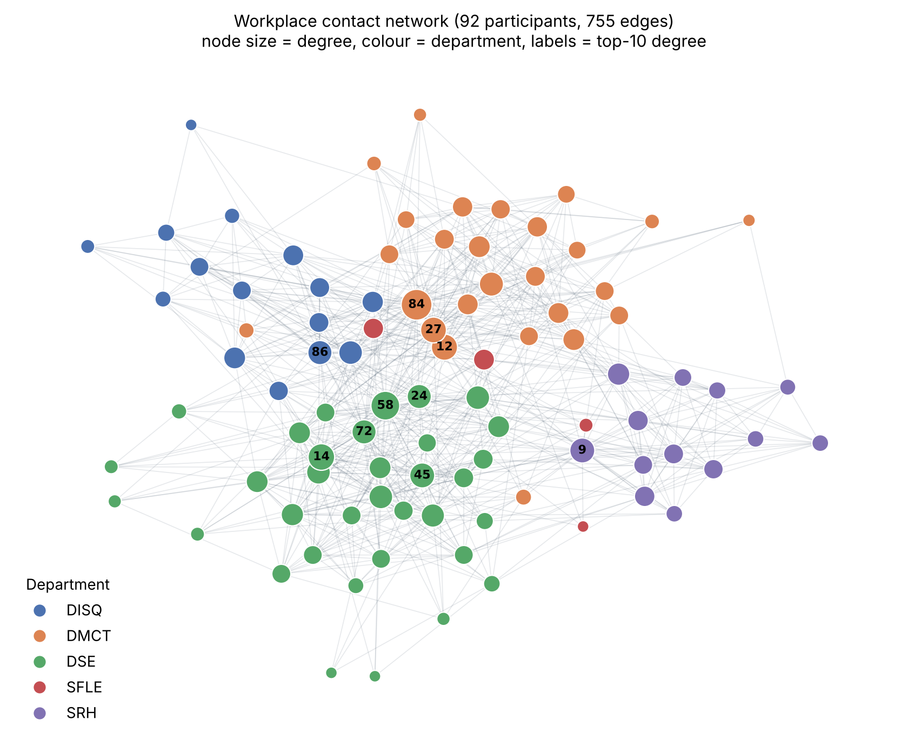
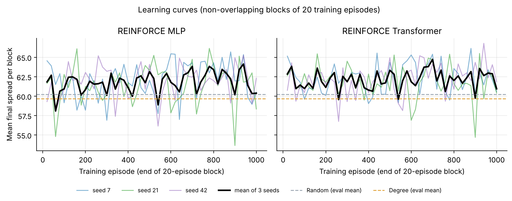
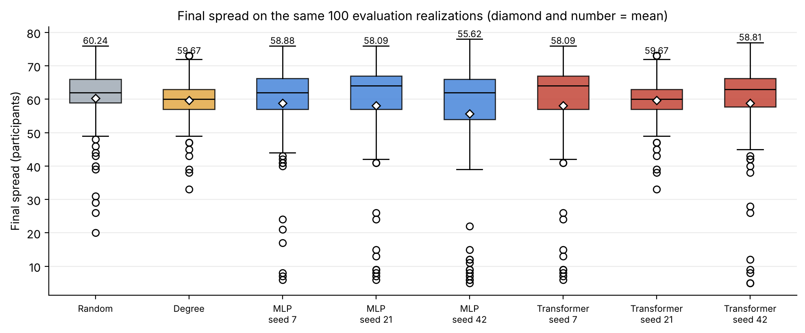
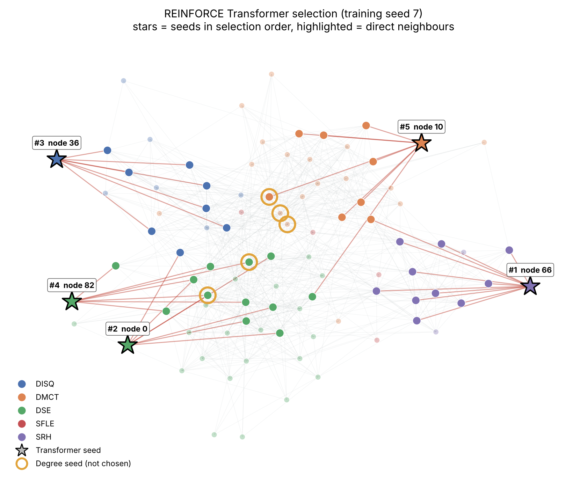

The instructor-supplied static package derived from SocioPatterns Contacts in a Workplace (office building in France, 24 June–3 July 2013) was used unchanged; the SHA-256 hashes of all three CSV files match the dataset README. All 92 participants are loaded from nodes.csv before the 755 edges are added. The graph is undirected and unweighted, has no self-loops or duplicate pairs, and aggregates the entire contact period. results/graph_edges.csv stores every pair once with source < target. Department labels are used only for figures and for the final descriptive analysis.
| Property | Value | Property | Value |
|---|---|---|---|
| Participants | 92 | Mean degree | 16.41 |
| Edges | 755 | Median / min / max degree | 15.5 / 4 / 44 |
| Density | 0.1804 | Mean local clustering | 0.426 |
| Connected components | 1 | Transitivity | 0.368 |
| Isolated participants | 0 | Diameter / avg. path | 3 / 1.96 |
| Rank | Node | Orig. ID | Dept. | Degree | Deg. centr. | Clustering |
|---|---|---|---|---|---|---|
| 1 | 84 | 804 | DMCT | 44 | 0.484 | 0.256 |
| 2 | 58 | 311 | DSE | 38 | 0.418 | 0.283 |
| 3 | 14 | 95 | DSE | 32 | 0.352 | 0.343 |
| 4 | 12 | 80 | DMCT | 31 | 0.341 | 0.305 |
| 5 | 27 | 134 | DMCT | 30 | 0.330 | 0.290 |
| 6 | 9 | 63 | SRH | 28 | 0.308 | 0.251 |
| 7 | 45 | 223 | DSE | 28 | 0.308 | 0.336 |
| 8 | 24 | 123 | DSE | 26 | 0.286 | 0.271 |
| 9 | 72 | 662 | DSE | 26 | 0.286 | 0.403 |
| 10 | 86 | 826 | DISQ | 26 | 0.286 | 0.323 |

The network is small, dense and very compact: every participant is within three hops of every other. Local clustering is high (0.43 on average; 0.17–0.78) and tends to fall as degree rises, so the hubs bridge groups while low-degree members sit inside tight departmental cliques. These hubs are also heavily connected to one another, which is the overlapping-audience problem the assignment describes.
I implemented the Independent Cascade Model myself (environment.py, IndependentCascadeSimulator) using the required live-arc construction. Every undirected edge becomes two directed arcs, giving 1,510 arcs sorted by (source, target). For an episode, numpy.random.default_rng(diffusion_seed) draws exactly one uniform number per arc in that order. An arc is live if its draw is < 0.10. A breadth-first search from the distinct seeds then counts every participant reachable through live arcs, seeds included. This is equivalent to the "one chance per newly active neighbour" process: each activation attempt is an independent coin flip used at most once, so flipping all coins in advance gives the same distribution of active sets. The same ordered arc list is used for every simulation. Live arcs and draws stay inside the simulator. Policies never see them, and the environment never evaluates hypothetical actions.
| Verification check (checks.json) | Result | Verification check (checks.json) | Result |
|---|---|---|---|
| Empty seed set → zero spread | pass | Duplicate action raises an error | pass |
| p = 0 → only distinct seeds active (incl. repeated seeds) | pass | Exactly five distinct users per episode (also all 800 eval episodes) | pass |
| p = 1 → all users reachable from seeds active | pass | Reward = spread / N (unit test and all 800 eval rows) | pass |
| Same graph, seeds and diffusion seed → same spread | pass | Masked actions have probability exactly 0 (both policies) | pass |
| Two arcs per undirected edge (1,510 arcs) | pass | Finite losses and gradient norms in all 300 updates | pass |
State and observation. reset(diffusion_seed) fixes the hidden realization for the episode and returns an N×5 matrix in ascending node-ID order together with a Boolean mask (True = unselected). The five features are exactly: degree centrality degree/(N−1); local clustering coefficient; selected indicator; selected-neighbour fraction (selected neighbours / degree, 0 for an isolated node); and remaining budget / 5. The first two are computed once. The last three are recomputed after every action. No department labels, IDs, embeddings, live arcs or future spread are exposed.
Actions and transitions. An action is an integer 0–91 naming an unselected participant. step(action) raises ValueError for a non-integer, out-of-range or already-selected action instead of silently replacing it. Otherwise it updates the selected set, the features and the mask. Reward and termination. Rewards for actions 1–4 are 0. After action 5 the cascade runs once and the episode terminates with R = final spread / 92 ∈ [0, 1]. There is no shaping, penalty or intermediate feedback.
reinforce.py implements REINFORCE (Williams, 1992) in plain PyTorch. During training, actions are sampled from the masked categorical policy, and each step's differentiable log-probability is kept until the update. After 20 complete episodes the loss below is minimized with one Adam step (lr = 0.001), after clipping the global gradient norm at 1.0. With γ = 1 and only a terminal reward, every step of episode i uses the same return Ri:
Returns and b are plain Python floats, so they carry no gradient. b starts at 0 in every run, stays fixed while a batch is collected and its loss computed, and is updated only after the optimizer step. Trajectories are then discarded. Each run therefore makes exactly 50 updates. No critic, entropy bonus, normalization, schedule, replay or early stopping is used. At the start of run s ∈ {7, 21, 42}, the Python, NumPy and PyTorch seeds are set to s, and episode e uses diffusion_seed = 1,000,000 + 10,000s + e.
How the update changes behaviour. The gradient of −(R−b) log π pushes up the probability of every action in an episode that beat the baseline, and pushes down every action in an episode that fell short, in proportion to the gap. Over many batches, participants that often appear in high-spread combinations gain logit mass under similar feature contexts. Why the baseline helps. All rewards are positive (about 0.65). Without b, every sampled action would be reinforced and only the size of the push would carry information. Subtracting a running estimate of the typical reward centres the weights, so the update keeps the same expected value (b does not depend on the actions) but has much smaller variance.
Both policies (models.py) output one logit per participant. Selected participants are set to −∞ only at the final stage (masked_logits), so the softmax gives them probability exactly 0. Both are trained with identical environment, features, REINFORCE code and settings. MLP (4,609 parameters): the same network, 5 → Linear(5,64) → ReLU → Linear(64,64) → ReLU → Linear(64,1), is applied independently to each participant's five features. Any interaction between participants must come through the hand-crafted selection features. Transformer (33,921 parameters): N×5 → Linear(5,64) → one nn.TransformerEncoderLayer (d_model 64, 4 heads, feed-forward 128, ReLU, dropout 0, post-LayerNorm, default biases) → Linear(64,1) per token. It uses no positional or ID embeddings, no causal mask, no graph-restricted attention and no extra final norm.
All six final checkpoints (after episode 1,000) and the two baselines were evaluated on diffusion seeds 900000–900099: exactly 800 episodes with identical realizations for every method. Degree picks the five highest-degree users (ties to the smaller ID). Random uses a separate generator seeded with diffusion_seed + 10,000,000 and samples without replacement. Neural policies choose the highest-probability valid action (exact ties to the smaller ID) with gradients disabled and no updates. Nothing was tuned on evaluation results.
| Method | Train seed | Spread mean | Spread std (pop.) | Reward mean | Selection time / episode | Training time |
|---|---|---|---|---|---|---|
| Random | −1 | 60.24 | 9.72 | 0.6548 | 0.07 ms | 0 |
| Degree | −1 | 59.67 | 7.26 | 0.6486 | 0.06 ms | 0 |
| REINFORCE MLP | 7 | 58.88 | 13.72 | 0.6400 | 0.49 ms | 2.32 s |
| REINFORCE MLP | 21 | 58.09 | 16.11 | 0.6314 | 0.71 ms | 1.94 s |
| REINFORCE MLP | 42 | 55.62 | 18.37 | 0.6046 | 0.56 ms | 1.92 s |
| REINFORCE Transformer | 7 | 58.09 | 16.11 | 0.6314 | 1.62 ms | 7.87 s |
| REINFORCE Transformer | 21 | 59.67 | 7.26 | 0.6486 | 1.63 ms | 9.66 s |
| REINFORCE Transformer | 42 | 58.81 | 14.74 | 0.6392 | 1.61 ms | 7.83 s |


| Method (seed) | Selected users (in order) | Departments | Cov. | Σdeg / reach |
|---|---|---|---|---|
| Degree | 84, 58, 14, 12, 27 | DMCT DSE DSE DMCT DMCT | 2 | 175 / 75 |
| MLP (7) | 66, 0, 36, 82, 85 | SRH DSE DISQ DSE DSE | 3 | 47 / 44 |
| MLP (21) | 0, 36, 66, 82, 10 | DSE DISQ SRH DSE DMCT | 4 | 40 / 43 |
| MLP (42) | 13, 71, 26, 89, 17 | SFLE DSE DSE DMCT DMCT | 3 | 44 / 36 |
| Transformer (7) | 66, 0, 36, 82, 10 | SRH DSE DISQ DSE DMCT | 4 | 40 / 43 |
| Transformer (21) | 84, 58, 14, 12, 27 | DMCT DSE DSE DMCT DMCT | 2 | 175 / 75 |
| Transformer (42) | 0, 36, 66, 82, 64 | DSE DISQ SRH DSE DSE | 3 | 41 / 38 |
| Random (100 eps.) | different set each episode | 3.09 | – | |
Policy diagnostics (results/policy_diagnostics.csv). On the empty selection, the final first-step entropy is 4.518–4.522 against 4.522 for a uniform distribution. The largest probability is at most 0.014, against 0.0109 uniform. In 5 of 6 runs, the top-ranked first pick is the same as at initialization. Transformer seed 21 started and ended strongly correlated with degree (r = 0.92 → 0.99), so its greedy set equals Degree's. The other runs ended with weak or negative correlation to degree, so their greedy sets favour low-degree peripheral participants.

Overlapping audiences. The Degree seeds have a combined degree of 175 but reach only 75 distinct participants in one hop, and they share 8 edges, so much of their audience is shared. The learned sets cover only 36–44 users in one hop but overlap almost nowhere. In this graph, however, the overlap problem matters less than expected. The expected number of live out-arcs per node is about 0.10 × 16.4 ≈ 1.6 > 1, so most realizations contain one giant live component of roughly 60–70 participants. Spread is then mainly "giant component or not": if any seed lands in it, the result is about 62 whatever the seed set. Hubs are almost certain to land in it, which explains Degree's narrow distribution (std 7.3, minimum 33). Low-degree seeds can occasionally all miss it, which explains the learned sets' collapses (minimum 5) and their higher medians when they succeed, because they also start cascades in separate departments. Random sets mix both effects and achieve the highest mean here. The differences between methods (about 1–2 users, ~2% of N) are small relative to the realization noise (std 7–18).
Learning stability. The curves are flat and the policies barely moved from initialization. With rewards concentrated around 0.65, the advantages R−b are small and dominated by realization noise. The largest pre-clip gradient norm per run was only 0.05–0.60, so the 1.0 clip never activated. Fifty Adam steps at lr = 10−3 are therefore too few to separate good from bad combinations. The run-to-run spread confirms that seed choice decides the outcome. The Transformer shows somewhat lower run-to-run variability (std 0.65 vs 1.39) and moved further from uniform than the MLP (maximum probability 0.012–0.014 vs 0.011), consistent with attention giving it a richer function class. I do not claim a significant difference from three seeds. Department coverage. The learned sets cover 3–4 departments, Degree covers 2 (DMCT and DSE only) and Random 3.09 on average. This is descriptive and was never used for training. Computational cost. Training a run takes about 2 s (MLP) and about 8.5 s (Transformer) on one CPU thread. Greedy selection costs 0.5–0.7 ms (MLP) and about 1.6 ms (Transformer) per episode, against about 0.06 ms for the heuristics. The Transformer's attention is O(N2) per step, which is negligible at N = 92. The entire pipeline runs in about 35 s.
Génois, M., Vestergaard, C. L., Fournet, J., Panisson, A., Bonmarin, I., & Barrat, A. (2015). Data on face-to-face contacts in an office building suggest a low-cost vaccination strategy based on community linkers. Network Science, 3(3), 326–347. https://doi.org/10.1017/nws.2015.10
SocioPatterns. Contacts in a workplace (2013 release, CC Public Domain Dedication). https://sociopatterns.org/datasets/contacts-in-a-workplace/
Williams, R. J. (1992). Simple statistical gradient-following algorithms for connectionist reinforcement learning. Machine Learning, 8, 229–256. https://doi.org/10.1007/BF00992696
Kempe, D., Kleinberg, J., & Tardos, É. (2003). Maximizing the spread of influence through a social network. Proc. KDD, 137–146.
Vaswani, A., et al. (2017). Attention is all you need. Advances in Neural Information Processing Systems, 30.
Zafarani, R., Abbasi, M. A., & Liu, H. (2014). Social Media Mining: An Introduction, Ch. 7 (Information Diffusion). Cambridge University Press.
Software: PyTorch 2.15 (nn.TransformerEncoderLayer), NumPy 2.5, NetworkX 3.7, pandas 3.0, Matplotlib 3.11. No code was adapted from external RL libraries or pre-trained models.